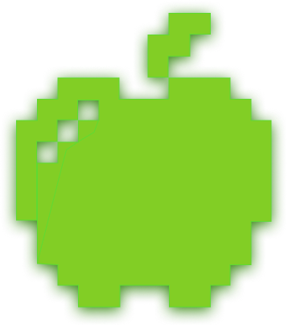
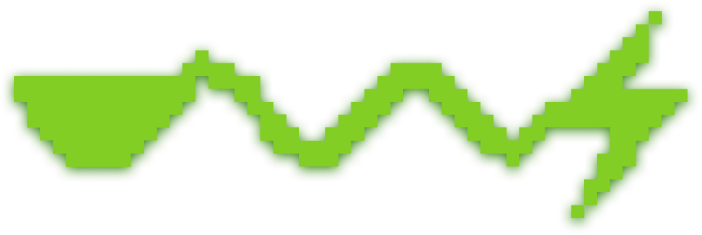
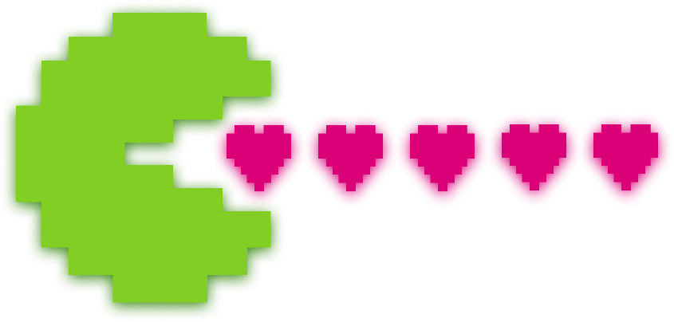
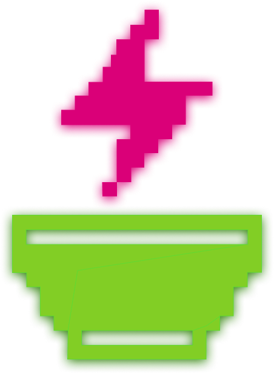
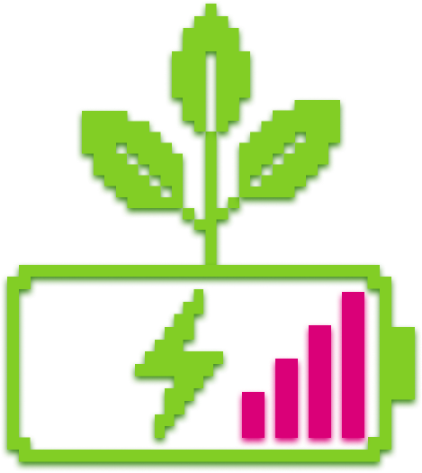

ПУЛЬС
Первая цифровая ЗОЖ-кофейня. Прокачай свой уровень в реальности: ИИ-помощник и абсолютный контроль над телом. Вступай в игру — начни квест за здоровьем!

МЫ
превратили заботу о себе в увлекательный квест с полностью оцифрованным сервисом. Никаких очередей и бумажных меню — только интерфейс в твоем смартфоне и два главных чит-кода:
Система очков ПУЛЬС! : Это не просто кешбэк, это коины твоего здоровья. Каждая позиция имеет свой вес: чем больше пользы в ингредиентах, тем больше очков. Ешь чисто, поднимайся в лидерборде «ТОП-Здоровье» и докажи, что ЗОЖ — это захватывающий лайфстайл.

ИИ-консультант Люся: Твой карманный нутрициолог и главный саппорт. Не хочешь ломать голову над калориями? Люся за секунду рассчитает идеальное КБЖУ, составит персональный рацион под твои статы (цели) и подскажет, какой бафф (блюдо) взять сегодня для максимального восстановления энергии.
НАША ИСТОРИЯ
В недалеком будущем, перегруженном синтетическим фастфудом, показатель базового здоровья (HP) человечества упал до критической отметки.

Вокруг ядра Люси был построен офлайн-хаб, замаскированный под 8-битную аркаду. Теперь каждый перекус здесь — это ценный лут, а Люся — верный компаньон, который направляет Игроков, помогая им взломать код собственного долголетия.
Система дала сбой. Тогда группа энтузиастов-биохакеров разработала патч — протокол возрождения. Сердцем этого протокола стала L.U.C.Y. (Люся) - сверхточная нейросеть, обученная на миллионах чистых рецептов и данных о метаболизме.
ФИЛОСОФИЯ
Здоровье — это высший счет на табло. Мы верим, что правильная пища не должна ассоциироваться с пресными листьями салата и скукой, а подсчет макронутриентов не должен быть сложной рутиной.

Мы геймифицировали роцесс и делегировали всю сложную математику искусственному интеллекту, чтобы вернуть людям азарт. Здоровая конкуренция мотивирует лучше строгих врачей, а заботливая ИИ Люся не даст сбиться с пути.
Наша миссия — сделать чистую еду самой популярной «многопользовательской игрой», где главный приз — твоё отличное самочувствие.
Целевая аудитория
Кто собирается на нашей базе?
В первую очередь, мы — реальная точка притяжения на карте города. Классное, атмосферное заведение, куда приходят за спешелти кофе, по-настоящему вкусной здоровой едой и живым общением.
1

Наши гости — это те, кто ценит комфорт в офлайне, но живет и мыслит на цифровых скоростях: студенты, разработчики цифровых продуктов, IT-специалисты, дизайнеры и биохакеры, которым скучно в классических пресных эко-кафе. Это люди, которым нужно качественное топливо для подзарядки между парами, проектами или рабочими тасками.
2
3
Они приходят к нам за крутой едой, но остаются ради игры: обожают пиксельную эстетику, кайфуют от удобства полностью оцифрованного сервиса, с радостью доверяют расчет КБЖУ нейросети Люсе и с азартом соревнуются с друзьями за первое место в лидерборде. Мы - физическое место, объединяющее любителей вкусно поесть и фанатов технологий под одной крышей.
Возможности
Меню и Заказ еды: Выбрать блюда, собрать свою корзину здоровья и оформить заказ на доставку или самовывоз.
Адрес кофейни: Где найти нашу офлайн-точкув реальном мире и часы работы.
Таблица лидеров («Глобальный ТОП-Здоровья»).
Чат с Люсей (твой ИИ-нутрициолог 24/7).

Press ANY KEY to stay healthy. © 2026